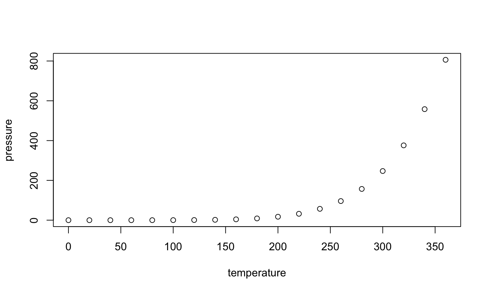

March 2017
Reducing Accidents in Brooklyn
The analysis for this deck and the accompanying Data Exploration R Notebook and Dashboard was primarily generated from the NYC Open Data Vehicle Collision Data Set.
This is an R Markdown presentation. Markdown is a simple formatting syntax for authoring HTML, PDF, and MS Word documents. For more details on using R Markdown see http://rmarkdown.rstudio.com.
When you click the Knit button a document will be generated that includes both content as well as the output of any embedded R code chunks within the document.
summary(cars)
## speed dist ## Min. : 4.0 Min. : 2.00 ## 1st Qu.:12.0 1st Qu.: 26.00 ## Median :15.0 Median : 36.00 ## Mean :15.4 Mean : 42.98 ## 3rd Qu.:19.0 3rd Qu.: 56.00 ## Max. :25.0 Max. :120.00
plot(pressure)
